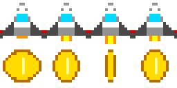
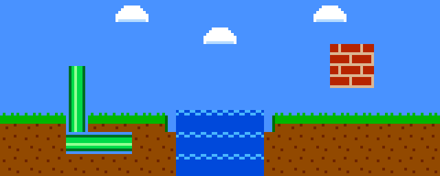
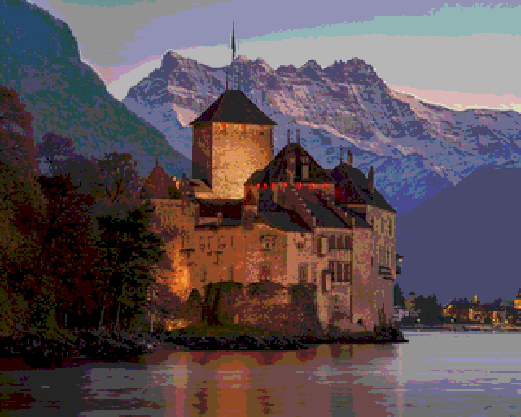
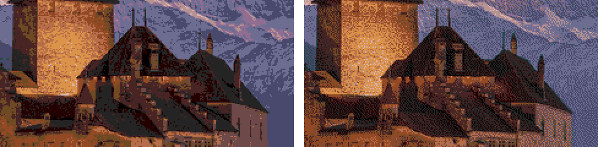
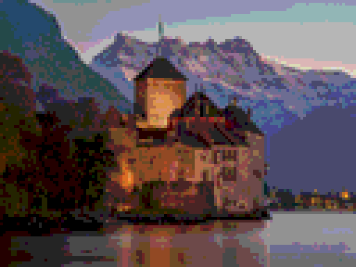
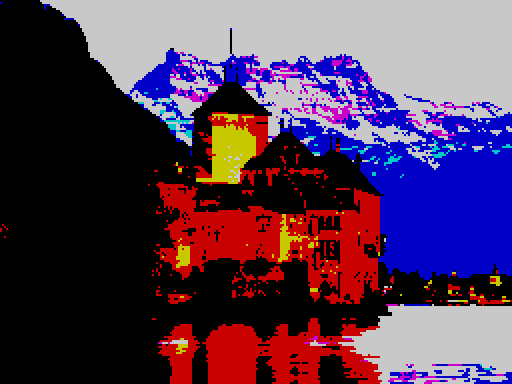
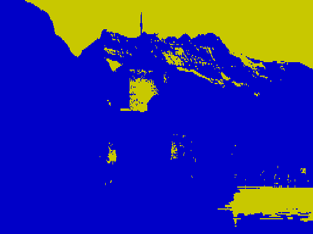

This manual covers zx next and zx zx0:
palettes, sprites, Layer 2 and LoRes screens, tiles and tilemaps, Timex
screens, ZX0 compression, and NEX files. It works through making the
graphics for a small game and packing them into a NEX file. It doesn't
repeat the full flag reference, which is in the CLI manual.
For classic .scr screens and the ZXMODE modes, see the
sprite handling and ZXMODE handling manuals.
The sprites and the tile level were drawn for this manual, and anyone
may use them. The title screen is Giles Laurent's photograph Chateau
de Chillon and Dents du Midi, licensed under CC BY-SA 4.0;
the screens made from it here are adaptations shared under the same
licence. The ZXMODE manual
says where to get it as chillon.jpg.

sprites.png, 64x32 pixels with a transparent
background, shown at four times its size. The top row has four frames of
a ship and the bottom row four frames of a coin. The fourth ship frame
repeats the second, and so does the fourth coin frame.

level.png, 160x64 pixels (20x8 tiles of 8x8), shown
at four times its size. It is built from a few tiles, some of them
mirrored or turned copies of others.
Every Next colour is 9-bit RGB333, with three bits each of red, green and blue, so there are 512 colours. Layer 2, sprites and tiles show 8-bit (or 4-bit) indices into a palette of such colours.
.nxp holds two
bytes per colour. zx also reads and writes three other
layouts used by other tools (see Palettes).--round nearest, the default). The other
modes are floor, ceil and
distance, which is gfx2next's default.--transparent n gives pixels
less than half opaque the index n, and stores n's RGB332 colour in that
palette entry. With 0xE3, the same files work for Layer 2 and 8-bit
sprites at their reset settings.zx next palette std -o std.nxp writes it.An image becomes palette indices in one of four ways:
| Source | What happens |
|---|---|
| An indexed PNG or BMP | Its palette and indices are kept as they are, as gfx2next does. |
--match file.nxp |
Each colour becomes the nearest colour of an existing palette. |
--std |
Each colour becomes the nearest colour of the standard palette. |
| Anything else | If the image's colours fit after reduction to RGB333, they are kept
in the order they first appear. Otherwise zx chooses the
colours by median cut. |
Layer 2 is the Next's bitmap layer. It has three sizes, plus the lower-resolution LoRes layer:
--mode |
Size | Bits per pixel | Stored | Bytes |
|---|---|---|---|---|
256x192 |
256x192 | 8 | row by row | 49152 |
320x256 |
320x256 | 8 | column by column | 81920 |
640x256 |
640x256 | 4 | column by column | 81920 |
lores |
128x96 | 8 | row by row | 12288 |
lores4 |
128x96 | 4 | row by row | 6144 |
zx scr fit fits the photograph to 320x256 with the
Lanczos filter. zx next bitmap encode then writes the
screen and its palette:
zx scr fit chillon.jpg --size 320x256 --resize fill --filter lanczos -o chillon-320.png
zx next bitmap encode chillon-320.png --mode 320x256 -o title.nxi --palette title.nxp
zx next bitmap decode title.nxi --palette title.nxp -o title.pngbitmap encode has its own --resize, but it
has no Lanczos filter, trim or centring, so fitting with
zx scr fit first gives a better picture.

The 320x256 Layer 2 screen, shown at twice its size. The steps in the evening sky are the limit of three bits per channel.
bitmap info describes a screen file:
$ zx next bitmap info title.nxi
title.nxi: 320x256, 320x256 at 8 bits per pixel, column by column
(640x256 at 4 bits is the same size; decode with -mode 640x256 for that)
no embedded paletteThe two 81920-byte modes can't be told apart by size, so
decode takes such a file as 320x256 unless
--mode 640x256 says otherwise. With --embed,
the palette is written before the pixels, 82432 bytes in all, and
decode finds it by the file's size.
Colour depth and dithering. This photograph's dusk
colours reduce to only 97 distinct RGB333 colours, so they all fit in
the palette and none has to be chosen. --dither fs has
nothing to do here: dithering applies only when an image's colours are
matched or chosen. The steps in the sky come from the 512-colour space
itself, and zx does not currently dither against them (the
work register tracks this as T-09).
Dithering matters when the palette is too small for the picture. The 640x256 mode has 16 colours:
zx scr fit chillon.jpg --size 640x256 --resize fill --filter lanczos -o chillon-640.png
zx next bitmap encode chillon-640.png --mode 640x256 -o hi.nxi --palette hi.nxp
zx next bitmap encode chillon-640.png --mode 640x256 --dither fs -o hi-fs.nxi --palette hi-fs.nxp
16 colours at 640x256, without dithering (left) and with
--dither fs (right). Measured as the ZXMODE manual
describes, with zx scr compare --metric blur, the error
falls from 7.75 to 6.16.
The standard palette needs no palette file, but it fits a picture
less well. --std gives the 320x256 Chillon an error of
14.25, against 6.81 with its own palette.
palette info lists a palette, and
palette decode draws it as a 16x16 grid of swatches:
$ zx next palette info title.nxp
title.nxp: 256 colours (rgb333)
0 RGB333 123 #24496D
1 RGB333 122 #244949
2 RGB333 245 #4992B6
...
zx next palette decode title.nxp -o title-palette.pngOther tools want other layouts, which --layout,
--from and --to name:
| Layout | Bytes per colour | Written by |
|---|---|---|
rgb333 (default) |
2 | gfx2next and nextraw: the usual .nxp |
rgb332 |
1 | gfx2next -pal-rgb332; the hardware fills in the missing
blue bit as the OR of the other two |
gbr444 |
2 | gfx2next -pal-gbr444 |
bgr222 |
1 | gfx2next -pal-bgr222, the Master System layout |
$ zx next palette convert title.nxp --to rgb332 -o title.pal
wrote title.pal (256 colours, rgb332, 256 bytes)
$ zx next palette info title.pal --layout rgb332
title.pal: 256 colours (rgb332)
0 RGB333 123 #24496D
1 RGB333 123 #24496D
...Colour 1 was RGB333 122. In one byte, its low blue bit is lost, and the hardware shows the OR of the other two blue bits, so it comes back as 123. Colour 0's low blue bit was already that OR, so it survives.
palette encode takes or chooses an image's palette on
its own, with the colour flags above. --min sorts a
palette, drops duplicates and renumbers the pixels, as gfx2next's
-pal-min does. It refuses to work with
--transparent, because sorting would move the transparent
entry.
A .spr file is 16x16 patterns one after another: 256
bytes each at 8 bits per pixel, or 128 at 4 bits.
sprite encode cuts an image into patterns, left to right
and top to bottom:
$ zx next sprite encode sprites.png --dedup --transparent 0xE3 -o sprites.spr --palette sprites.nxp
pattern 3 repeats kept pattern 1
pattern 7 repeats kept pattern 4
wrote sprites.spr (6 patterns, 1536 bytes)
wrote sprites.nxp (256 colours, rgb333, 512 bytes)--dedup dropped the two repeated frames. Each message
gives the pattern's position in the image, then the number of the kept
pattern it repeats in the file. The animation table in your program
should use the file's numbers: ship frames 0, 1, 2, 1 and coin frames 3,
4, 5, 4. The transparent background became index 0xE3.
$ zx next sprite info sprites.spr
sprites.spr: 6 patterns of 16x16 at 8 bits per pixel
0 7 colours used
1 8 colours used
...
zx next sprite decode sprites.spr --palette sprites.nxp --transparent 0xE3 --per-row 8 -o sheet.pngsprites.spr drawn back, at four times its size: the
six patterns left after dropping the repeats.
decode --range 3-5 draws only some patterns, and
--split dir writes each one as its own PNG
(dir/000.png onwards), which is handy for checking frames
one at a time. --pad n fills a sheet out to n patterns with
the transparent index, for a program that loads a fixed number.
4-bit sprites. At 4 bits per pixel, a pattern takes half the memory and its 16 colours are one of the palette's 16-colour banks. This sheet has 11 colours with the background, so it fits:
zx next sprite encode sprites.png --depth 4 --dedup --transparent 3 -o sprites4.spr --palette sprites4.nxp
zx next sprite decode sprites4.spr --depth 4 --palette sprites4.nxp --transparent 3 -o sheet4.pngThat writes 768 bytes of patterns and a 16-colour palette of 32 bytes. The transparent index is 3 because a 4-bit sprite compares only the low four bits of NextReg 0x4B, which is 0xE3 at reset. A 4-bit pattern stores its left pixel in the high nibble.
The sprite hardware takes four or five attribute bytes per sprite
through port 0x57: position, pattern, palette offset, mirroring,
rotation and scaling. attrs encode builds that table from
JSON, so it can be edited and kept under version control.
attrs decode turns a table back into JSON.
[
{"x": 152, "y": 200, "visible": true, "pattern": 0},
{"x": 40, "y": 60, "visible": true, "pattern": 3, "extended": true, "scale_x": 1, "scale_y": 1},
{"x": 200, "y": 60, "visible": true, "pattern": 3, "extended": true},
{"x": 20, "y": 0, "visible": true, "pattern": 4, "extended": true, "relative": true},
{"x": 40, "y": 0, "visible": true, "pattern": 5, "extended": true, "relative": true}
]$ zx next attrs encode sprites.json -o sprites.atr
wrote sprites.atr (5 sprites, 24 bytes)This places the ship (pattern 0) at 152,200, and a coin at double
size. The last three sprites form a group: an anchor coin at 200,60, and
two relative sprites 20 and 40 pixels to its right. A relative sprite's
x and y are offsets from the last anchor, -128
to 127, so moving the anchor moves the whole group.
Scaling, relative sprites, 4-bit patterns and some other fields live
in the fifth byte. zx refuses a sprite that needs it unless
it sets extended, so the table never silently drops a
field. The first sprite needs only four bytes, which is why five sprites
take 24 bytes. --fixed5 writes five bytes for every sprite,
for a program that uploads the table with a fixed stride.
scale_x and scale_y run from 0 to 3, for 1x to
8x. The CLI manual lists every field.
The tilemap layer draws a screen from a set of tiles and a map of
tile indices. tiles encode cuts an image into tiles (8x8 by
default) and writes three files from a base name: base.nxt
holds the tiles, base.nxm the map, and
base.nxb the blocks, when there are any.
How many tiles are left depends on how far --dedup looks
for matches:
--dedup |
Tiles from level.png |
What else counts as a repeat |
|---|---|---|
none |
160 | nothing: every tile is kept |
repeat |
11 | an identical earlier tile |
mirror |
9 | also a mirrored one: the right half of each cloud and the left grass edge |
rotate |
8 | also a turned one: the sideways pipe |
A mirrored or turned match costs no tile memory, because the map
entry's attribute bits draw the stored tile mirrored or turned. Those
bits need two-byte map entries, --map16. At 4 bits per
pixel, the 8 tiles take 256 bytes:
$ zx next tiles encode level.png --depth 4 --colors 16 --dedup rotate --map16 -o level --palette level.nxp
wrote level.nxt (8 tiles of 8x8 at 4 bits, 256 bytes)
wrote level.nxm (20x8, 320 bytes)
wrote level.nxp (16 colours, rgb333, 32 bytes)--colors 16 is needed because a 4-bit tile set from an
image that is not indexed must not choose more colours than a bank
holds. An indexed image drawn in banks of 16 colours keeps its banks
instead: each map entry's palette offset comes from the high four bits
of the tile's last pixel, as gfx2next does.
The tile set, at eight times its size, in the order the tiles first appear in the level. The right half of the cloud, the left grass edge and the sideways pipe are not stored; the map draws them from these.
tiles decode draws the tile set as a sheet, or draws the
map itself with its attributes applied. Drawing the map is the check
that nothing was lost:
zx next tiles decode level.nxt --depth 4 --palette level.nxp -o tileset.png
zx next tiles decode level.nxt --depth 4 --palette level.nxp --map level.nxm --map-size 20x8 --map16 -o check.png
zx scr compare level.png check.pngThe last command prints 0 of 10240 pixels differ.
Like gfx2next, zx records every way a tile matches. A
symmetric tile, such as the plain sky, can therefore carry mirror bits
in its map entry although it is drawn the same either way.
Some other flags:
--map-columns writes the map column by column.--offset n adds n to every tile index, for a tile set
loaded after other tiles.--pal-offset n sets every entry's palette offset.--block WxH groups tiles into blocks, which the map
then indexes. Blocks hold plain tile indices, so they work only with
--dedup none or repeat.LoRes is 128x96 at 8 bits per pixel (or 4 bits with
lores4), with the same palette handling as Layer 2:
zx scr fit chillon.jpg --size 128x96 --resize fill --filter lanczos -o chillon-128.png
zx next bitmap encode chillon-128.png --mode lores -o title.slr --palette lores.nxp
LoRes, at four times its size.
Timex screens. The Next also has the two Timex
modes. Both files are 12288 bytes: the screens at 0x4000 and 0x6000, one
after the other. The size can't tell them apart, so --mode
is always given.
--ink, 0 to 7) and its complement as paper. From a
full-colour image, a pixel darker than mid-grey becomes ink; an indexed
image uses any index but 0 as ink.zx scr fit chillon.jpg --size 256x192 --resize fill --filter lanczos -o chillon-256.png
zx next timex encode chillon-256.png --mode hicolour -o title.hic
zx scr fit chillon.jpg --resize fill --filter lanczos -o chillon-512.png
zx next timex encode chillon-512.png --mode hires --ink 1 --resize stretch -o title.shr
zx next timex decode title.hic --mode hicolour -o hic.pngA HiRes pixel is half as wide as it is tall, so a HiRes picture is
fitted at 512x384, the shape of the screen, and then squeezed to 512x192
with --resize stretch. Fitting straight to 512x192 would
crop a wide strip of the picture and show it stretched upwards.

HiColour, at twice its size. It still has two colours per 8 pixels across, but each pixel row of a cell can have its own pair.

HiRes with ink 1 (blue) and its complement (yellow), shown with each row doubled to keep the proportions. It suits line art and text better than a photograph, especially a dark one: draw for it, or dither to one bit before encoding.
zx zx0 compresses in Einar Saukas's ZX0 format, which
the Next tools and many Spectrum programs decompress at run time. It is
a port of the reference compressor, with the same optimal parse, so it
writes the same bytes as zx0.
$ zx zx0 title.nxi
wrote title.nxi.zx0 (24757 bytes from 81920)
$ zx zx0 --quick title.nxi -o title-quick.nxi.zx0
wrote title-quick.nxi.zx0 (25343 bytes from 81920)
$ zx zx0 -d title.nxi.zx0 -o back.nxi
wrote back.nxi (81920 bytes from 24757)The optimal parse takes time. Here it took 1 minute 57 seconds for
the 80 KB screen. --quick searches nearer offsets only, and
took 4.6 seconds for 2% more bytes. Use --quick while
iterating and the full search for a release.
--back compresses backwards, for decompressing in place
from the end of a buffer.--classic writes the older v1 format that gfx2next
writes.A NEX file holds a program's memory banks, a loading screen and its
palette, and a header with the start address. nex build
puts one together. Here, game.bin stands for a program
assembled to run at 0x8000:
$ zx next nex build --bin 0x8000=game.bin --pc 0x8000 --sp 0xFF00 --screen l2_320=title.nxi --palette title.nxp --border 0 -o game.nex
wrote game.nex (NEX V1.3, 1 banks, 99328 bytes)
$ zx next nex info game.nex
game.nex: NEX V1.3
start 8000, stack FF00, bank 0 at C000, border 0
core 2.0.28 or later, 768 KB
loading screen: l2_320, with palette
1 banks: 2--bin ADDR=file loads a file at a 64 KB address. It
goes into the banks that the Next maps there at start: 5 at 0x4000, 2 at
0x8000 and 0 at 0xC000. --bank N=file places a file in any
16 KB bank directly, for data beyond the first 64 KB.--screen takes the loading screen. Its kinds are
l2, l2_320, l2_640,
lores, ula, hires and
hicolour.zx raised
the version by itself. Checksums, copper code and appended data
(--checksum, --copper, --append)
do the same.nex extract takes a file apart, and
nex build --header puts it back together from those parts
with changes:
$ zx next nex extract -o parts game.nex
wrote 4 files to parts
$ ls parts
bank_002.bin header.json palette.nxp screen_l2_320.nxiheader.json holds the start address, stack, entry bank,
border, core version and the other header fields. zx lays
out a NEX file as sjasmplus's SAVENEX does. Its tests
rebuild six files that sjasmplus wrote, byte for byte.
All the commands here are zx next and
zx zx0. The full flag reference is in the CLI manual, and the library API
(pkg/zxn, pkg/nex, pkg/zx0) in
the library manual. Points that are easy to
miss:
--round floor and ceil, gfx2next reduces a
palette colour twice, so it moves one more step. zx reduces
once, as nextbmp does.--transparent only shows which index a file uses.zx. Tile
cutting in column order, planar 4-bit tiles, splitting output into bank
files, and assembler or C output are not in zx next. The
work register tracks them as T-06. ZX0 compression is a separate step,
zx zx0.